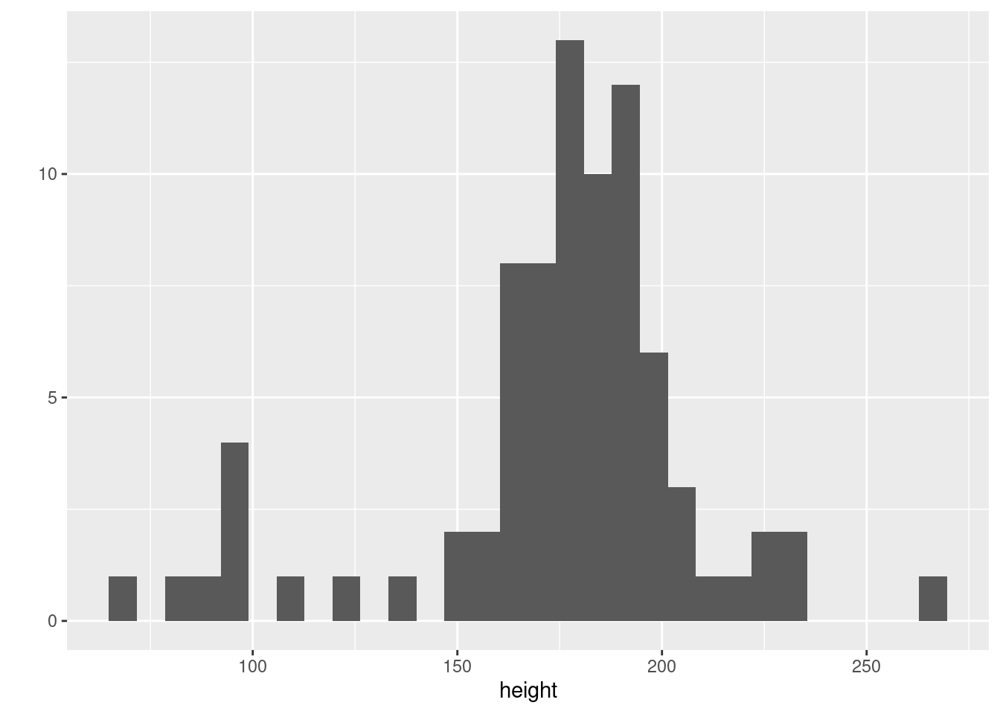
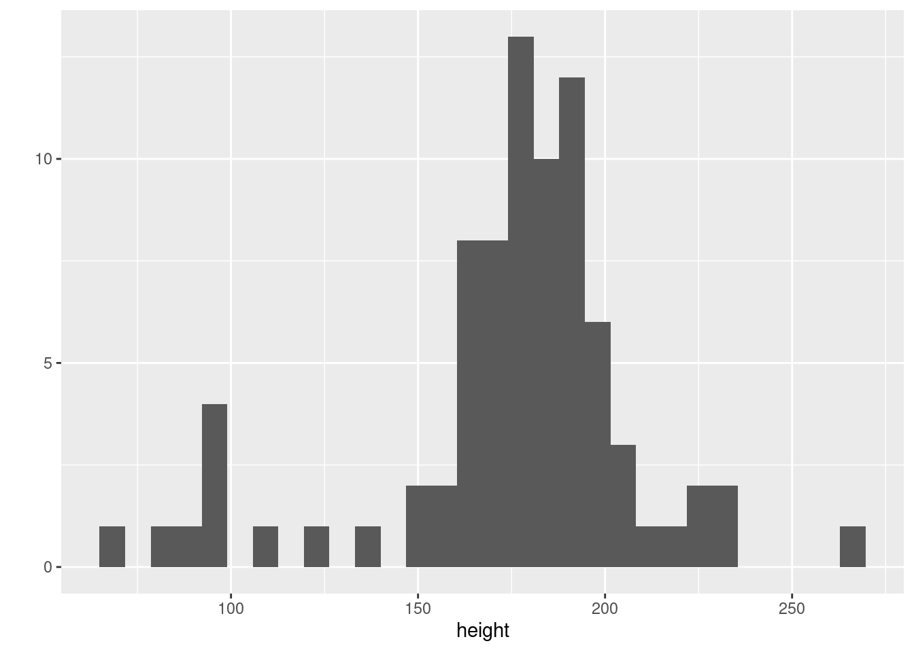
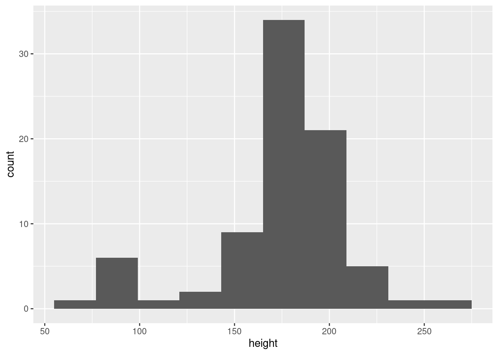
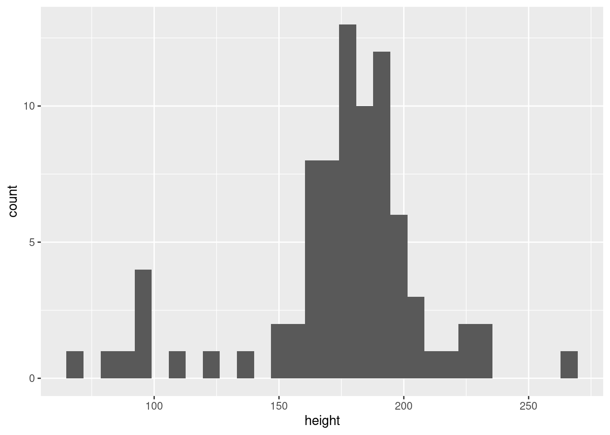
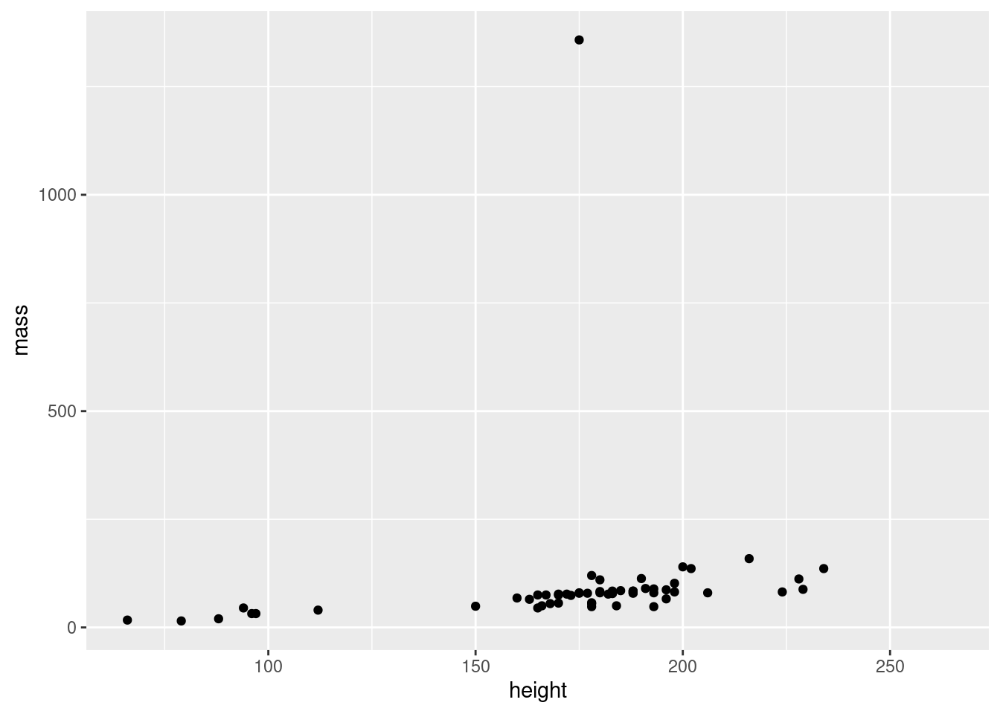
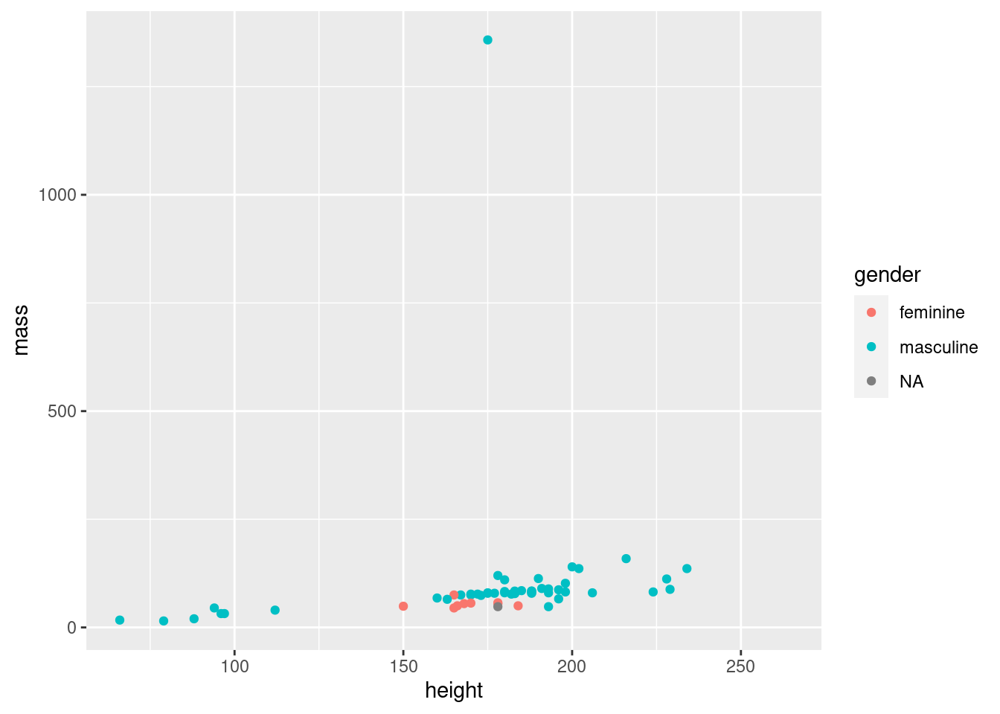
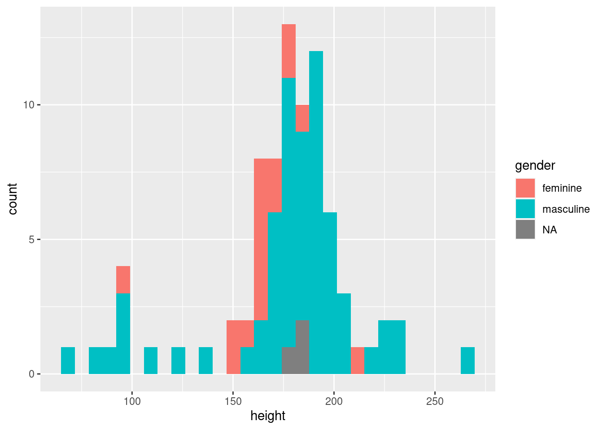
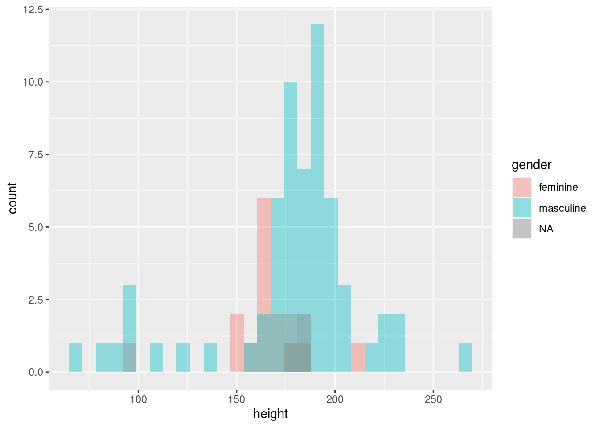
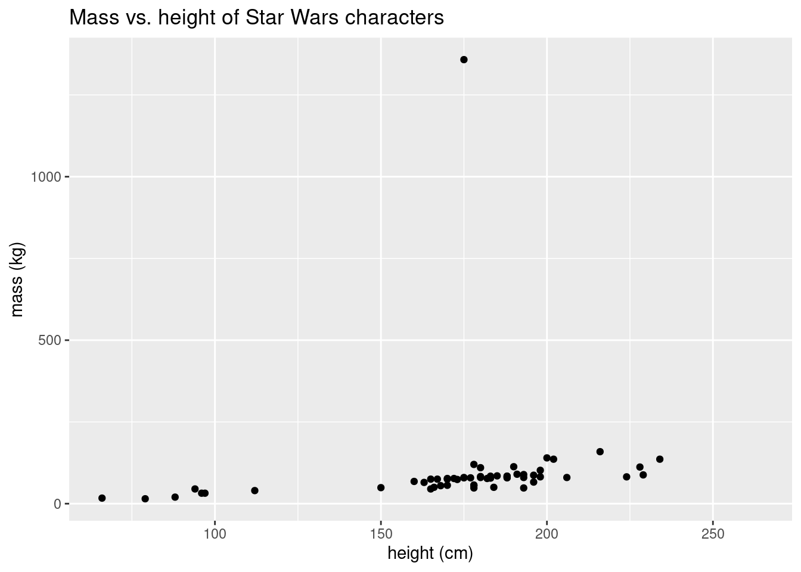
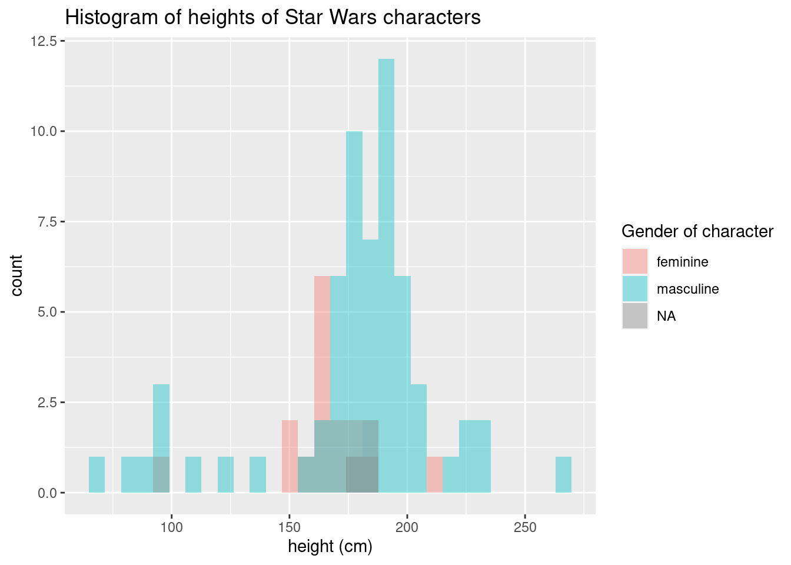

hist(x = starwars$height, breaks = 10, data = starwars)
ggplotplot() to ggplot() + ...So far we have created graphs with base R1 functions like plot() and hist().
However the graphs created via these functions are not very visually appealing. It also becomes difficult to create more complex graphs, and the ways to do so are not very intuitive.
In this chapter we will learn how to use alternative graphing functions from the ggplot2 package. This is a core part of the tidyverse, just like the dplyr and tidyr packages that we learned about for data wrangling.
For example, instead of using hist() to create a histogram:
hist(x = starwars$height, breaks = 10, data = starwars)
…we will use an alternative pair of functions, ggplot() and geom_histogram(), like this:
ggplot(data = starwars) +
geom_histogram(
mapping = aes(x = height),
bins = 10
)
As you can see, the shape of the histograms are very similar. However, we’ve avoided this way of creating graphs up until now, because we’ve been trying to keep our code as simple as possible.
Now we need to make the trade of slightly more complicated code in exchange for much better graphs. So let’s jump in and see how and why this works.
The ggplot2 package gets its name because it’s based on a concept called the Grammar of Graphics (hence ggplot…). This is a fascinating topic that we will learn more about later in this book, but the key idea is that all data visualizations can be described using a common set of terms and ideas (i.e. a “grammar”). The terms of this grammar correspond to the functions and their parameters in the ggplot2 package.
One of the most important parts of this grammar are the layers that we can add to a graph.
For example, the ggplot() function by itself just creates a blank canvas, i.e. the base layer of the graph:
ggplot(data = starwars)
We can then add layers (created by other functions) by combining them with the + operator.
To get some kind of graph layer we need to take the data and map it to a geometric shape.
For example, if we wanted to map the height column of the starwars dataset to the geometric shape of a histogram’s bars, we could use this code:
geom_histogram(mapping = aes(x = height))
A few things to note:
geom_histogram() function is an example of what we call a geom function (each geom function specifies a different type of geometric shape).mapping which tells R how to convert a column of data into a layer.mapping parameter is a function called aes() (this is short for “aesthetic”). Inside the aes() function we need to specify any parts of the histogram’s appearance that are determined by a column in the dataset.
height variable.We then add this layer to the canvas created by ggplot() with the addition operator, +.
And so our final code looks like this:
ggplot(data = starwars) +
geom_histogram(mapping = aes(x = height))We refer to this combination of the mapping parameter and its aes() argument as an aesthetic mapping, which is a fancy way of saying how we convert columns of the dataset into some visual representation.
But not every part of a graph is determined by data in the dataset. For example, there is no column in the starwars dataset that tells us how many bins this histogram should have. Instead we need to specify that number ourselves, with another piece of data (i.e. the number of bins).
Since this number is not in the dataset, it is not an aesthetic mapping. Therefore we specify the number of bins as an argument of the geom_histogram() function, and not of the aes() function, like so:
ggplot(data = starwars) +
geom_histogram(
mapping = aes(x = height),
bins = 30
)
Do you see how the geom_histogram() function has two parameters, mapping and bins, whereas the aes() function has a single parameter (x)?
(We have written the geom function’s two arguments on separate lines to improve the readability of this code.)
ggplot()Hopefully you are beginning to see that the ggplot() syntax uses many of the same parameters as qplot(), just in different places.
We can create a scatter plot by switching to a geom function called geom_point() and passing an additional column to the aes() function to go on the y axis:
ggplot(data = starwars) +
geom_point(
mapping = aes(x = height, y = mass)
)
Sometimes we wish to highlight different categories of data in a graph. There are different ways that qwe could do this, but a common solution is to use color.
For example, let’s say that we want to investigate the relationship between mass versus height again, but also look at how it varies between genders.
The starwars dataframe conveniently contains a categorical gender column that tells us this information:
starwars |>
select(name, mass, height, gender) |>
head()# A tibble: 6 × 4
name mass height gender
<chr> <dbl> <int> <chr>
1 Luke Skywalker 77 172 masculine
2 C-3PO 75 167 masculine
3 R2-D2 32 96 masculine
4 Darth Vader 136 202 masculine
5 Leia Organa 49 150 feminine
6 Owen Lars 120 178 masculineWe can add an additional aesthetic mapping to our scatter plot from the previous section, which will map the gender column to the color aesthetic of the scatter point layer:
ggplot(data = starwars) +
geom_point(
mapping = aes(x = height, y = mass, color = gender)
)
Similarly we can also color histograms - however the color parameter colors the outside of shapes:
ggplot(data = starwars) +
geom_histogram(mapping = aes(x = height, color = gender))
This graph is hard to interpret. It would be easier if we could color inside the shapes - fortunately we can do this using the fill parameter instead of color:
ggplot(data = starwars) +
geom_histogram(mapping = aes(x = height, fill = gender))
Note that this still goes inside the aes() function, because we are still mapping the gender column, just now to the fill aesthetic.
One other thing to note is that, by default, ggplot2 will stack bars of different colors on top of each other. However, this makes it hard to compare the relative heights of the bars, in direct contravention of the graphing guidelines that we learned in Section 5.7.
Thus what we need to do is to change the position of the bars so that each bin’s bars overlap. We will also need to make them transparent so that we can see through to the bars behind. We can do this with the position and alpha parameters:
ggplot(data = starwars) +
geom_histogram(
mapping = aes(x = height, fill = gender),
position = "identity",
alpha = 0.4
)
A few things to note:
position = "identity" to cause the bars to all start at the x-axis.alpha = 0.4 to make the bars 40% transparent. You can set alpha anywhere from 1 (completely opaque) to 0 (completely transparent, i.e. invisible). Usually a value between 0.2-0.4 works well."identity" and 0.4 are values, not columns of the dataframe, so we need to supply these two new parameters to the geom function instead of the aes() function (i.e. we are not creating any aesthetic mapping to the data in starwars with these settings).It is actually getting a little hard to interpret some of the overlapping bars in the plot above, because when too many colors overlap we get an indistinguishable grey mess. Coloring histograms woks best when we have only two (or maybe three) categories. More categories than that and we need to start considering whether a different type of graph might communicate the patterns in the data more clearly.
ggplot()One advantage of ggplot() over plot() is that we can pipe a dataframe to ggplot() because the first parameter of ggplot() is the dataset to be used.
So instead of explicitly passing the starwars dataframe to the data parameter:
ggplot(data = starwars) + ...…we could write this:
starwars %>%
ggplot() + ...This might not seem like much, but it does mean that we can put the graphing functions at the end of a series of piped functions that transform and wrangle our dataset, for example:
some_dataset %>%
mutate(...) %>%
filter(...) %>%
ggplot() + geom_FUNCTION(...)Note how we use pipes to connect a series of sequential data wrangling steps leading up to ggplot(), but then after ggplot() we have to switch to the + operator because we are then adding layers together. Don’t try to pipe the output of ggplot() on to a geom function because it won’t work (because we are trying to combine things in the graph, not work on the output of the previous function).
It is good practice to label all the graphs we create. We can do this by adding the labs() function to a graph:
starwars %>%
ggplot() +
geom_point(
mapping = aes(x = height, y = mass)
) +
labs(
title = "Mass vs. height of Star Wars characters",
y = "mass (kg)",
x = "height (cm)"
)Warning: Removed 28 rows containing missing values (`geom_point()`).
Notice how:
labs() function is a separate function that we add on to the graph as a separate layer with the + operatorlabs() function, we can supply an argument to the title parameter to change the title, and the y and x arguments to change the labels on those axes.
We can also update any legend label as well by providing the same parameter name that we used in the aes() function. For example, with fill:
ggplot(data = starwars) +
geom_histogram(
mapping = aes(x = height, fill = gender),
position = "identity",
alpha = 0.4
) +
labs(
title = "Histogram of heights of Star Wars characters",
x = "height (cm)",
fill = "Gender of character"
)`stat_bin()` using `bins = 30`. Pick better value with `binwidth`.Warning: Removed 6 rows containing non-finite values (`stat_bin()`).
count label on the y-axis of this histogram, since that is a perfectly adequate name and has no units.
Using the labs() function, add a title and y-axis label to the boxplot of price that you created earlier (we will leave the x-axis label as its default, since that is adequate for this graph.)
I.e. functions that come as part of R, and don’t need to be imported from an extra package.↩︎